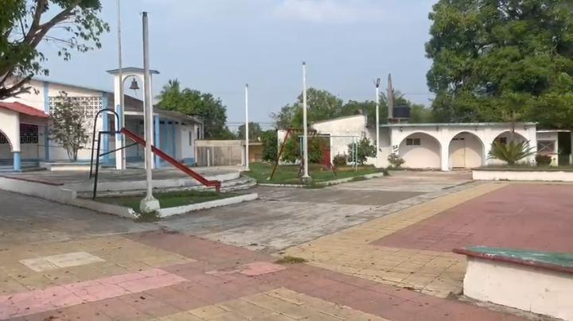
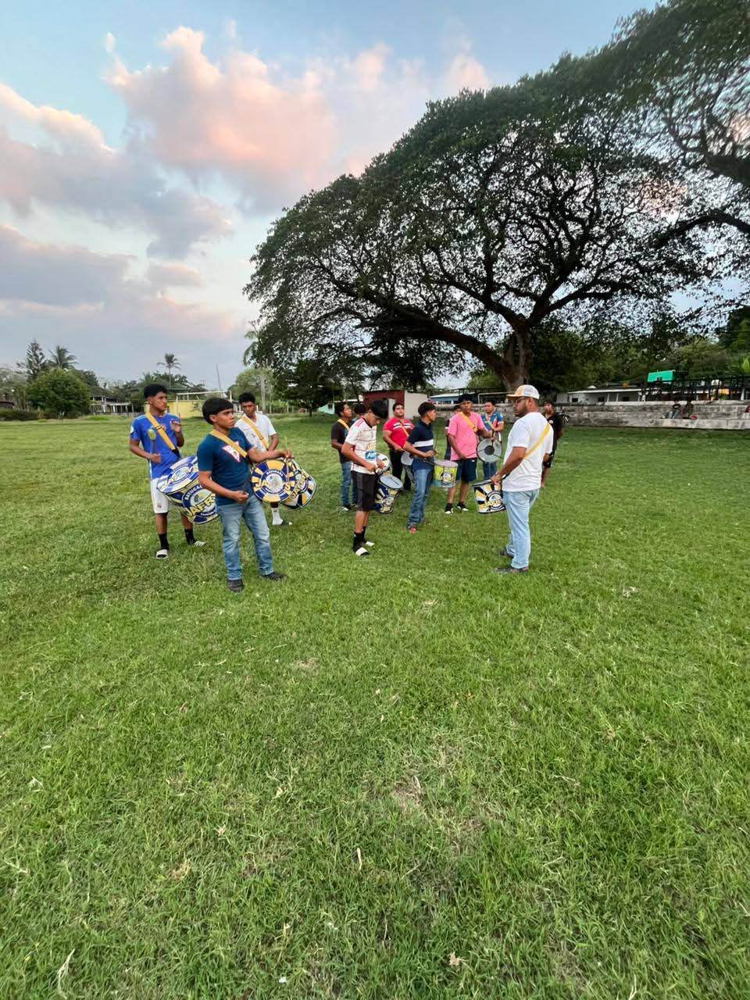

🌳 Parque Principal

Es uno de los espacios más frecuentados y animados de la localidad. Por las tardes y fines de semana se convierte en punto de reunión: familias, jóvenes y niños salen a pasear, descansar y practicar juegos sencillos. Cuenta con áreas verdes, bancas y buena sombra. Aquí es muy común ver partidos de voleibol organizados por los propios habitantes, lo que fortalece la convivencia entre vecinos y mantiene viva la costumbre de compartir al aire libre.
⚽ Campo Deportivo

Es el recinto más grande para actividades físicas y eventos colectivos. Principalmente lo utilizan alumnos y maestros de la escuela secundaria y del bachillerato para sus clases de educación física y entrenamientos. También es el lugar favorito para jugar fútbol y béisbol; incluso asisten equipos de poblaciones cercanas como Los Naranjos y Tres Valles para realizar encuentros amistosos y torneos. Además, es el espacio elegido para grandes celebraciones: jaripeos tradicionales, fiestas patronales, reuniones populares y festejos de cumpleaños para grupos grandes.
⛪ Iglesia de la Comunidad

Constituye el centro espiritual y también histórico de San Antonio Texas. Su construcción conserva rasgos sencillos pero sólidos, típicos de las iglesias rurales de la región. Aquí se celebran misas diarias y dominicales, así como las principales fiestas religiosas del año, procesiones y actos especiales que reúnen a casi toda la población. Es el lugar donde se conservan y transmiten las creencias y tradiciones religiosas que forman parte de la identidad de este pueblo.
🌿 Zonas Naturales y Caminos
Alrededor de la localidad se encuentran senderos y zonas de cultivo que también son recorridos por visitantes y locales; ofrecen vistas amplias del paisaje agrícola y permiten apreciar la vegetación, el clima y la forma de vida ligada a la tierra. Son ideales para caminatas tranquilas y disfrutar del aire libre.